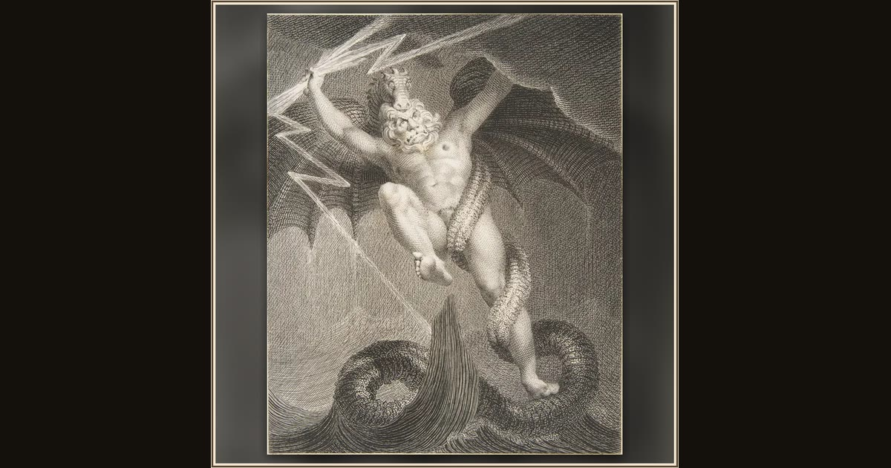

Tornado–Zeus Battling Typhon, from Erasmus Darwin's "Botanic Garden"
William Blake · August 1, 1795 · met
Blake’s engraving shows a winged figure with lightning above a coiling serpent; the museum identifies the scene as Zeus battling Typhon, whom Hesiod says Zeus struck (855–859) Explore its place in Hesiod's Poems, Theogony, line 855.